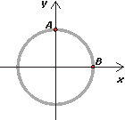
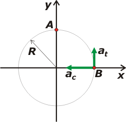

|
NO ME SALEN
EJERCICIOS RESUELTOS DE FÍSICA
(Movimiento circular)
|
|

|
| |
FIS cN6.17* - Un chico se encuentra parado en una calesita a 2,5 m de su centro, que gira en sentido horario dando una vuelta cada 10 segundos. En la figura se muestra la trayectoria del chico vista desde arriba. Cuando el chico pasa por el punto A la calesita comienza a frenar uniformemente y se detiene al dar, desde A, media vuelta.
|
a) ¿Cuánto tiempo tarda la calesita en detenerse?
b) Escriba el vector aceleración a del chico para el instante en que pasa por última vez por B, en coordenadas cartesianas, utilizando el sistema de referencia indicado.
|
 |
|
| *El presente ejercicio formó parte del examen parcial de la materia Física, del CBC, tomado el 1ero. de junio de 2018. Se trata de un ejercicio demasiado extenso (y con demasiadas cuentas) como para un examen... pero bueno, es lo que hubo. |
|
|
|
 |
Si no hacemos un buen esquema este ejercicio se convierte en una pesadilla. Bueno, acá lo tenés. Fijate que ya está elegido el sistema de referencia tanto de tiempos como de posiciones angulares (ceros en A).
Te habrás dado cuenta que llamé C al punto en que se detiene (después de dar media vuelta desde A). |
|
|
|
Escribamos las ecuaciones horarias del pibe que describen su movimiento desde A, cuando empieza su movimiento variado (si no tenés los modelos de ecuación a mano los podés ver acá).
θ = ωA t + 0,5 γ t2
ω = ωA+ γ t
Lamentablemente no sabemos cuánto valen la velocidad angular en A, ωA, ni la aceleración angular γ, pero la velocidad en ese instante es igual a la que traía antes de comenzar a frenar, cuando se movía a velocidad angular constante. Y la podemos calcular porque el enunciado aporta el valor del período, T.
ωA = 2π / T
ωA = 2π / 10 s
ωA = 0,2 π s-1
O, si preferís (aproximadamente):
ωA = 0,628 s-1
Si querés, podemos volver a escribir las ecuaciones horarias con este dato fresquito:
θ = 0,628 s-1t + 0,5 γ t2
ω = 0,628 s-1+ γ t
Nos sigue faltando el valor de la aceleración angular... pero podemos pedirle a esas dos ecuaciones que hablen de punto C, en el que la calesita y el pibe se detienen.
π = 0,628 s-1 tC + 0,5 γ tC2
0 = 0,628 s-1+ γ tC
Y ahora, si lo mirás con cariño podés ver que ahí tenés dos ecuaciones con dos incógnitas, de modo que operando algebraicamente podés averiguar cuánto valen esas incógnitas, que son: el instante en que se detiene (una de las preguntas del enunciado) y de paso el valor de la aceleración (que vamos a necesitar para responder la segunda pregunta).
Yo te ayudo: de la segunda ecuación despejás γ:
γ = − 0,628 s-1/ tC
Eso lo metés en la primera:
3,14 = 0,628 s-1 tC − 0,5 . 0,628 s-1 tC
3,14 = 0,314 s-1 tC
Y ya tenemos una de las respuestas que pide el enunciado: |
|
|
|
|
|
Y la aceleración angular:
γ = − 0,0628 s-2
La pregunta b) nos pide las componentes de la aceleración del pibe cuando pasa por el punto B. Mirá el nuevo esquema. |
|
|
|  |
|
La aceleración tiene una componente tangencial (que en ese instante tiene la dirección y) que describe cuánto está cambiando (en este caso: disminuyendo) su rapidez; y una componente centrípeta (que en este instante tiene la direción x) que describe cómo el pibe está variando la dirección de su velocidad, o sea, girando. |
|
|
tangencial, at, at = γ . R
centrípeta, ac, ac = ωB2. R
Para calcular la componente tangencial no hay demasiado problema (no tenés que preocuparte por el signo, ya que esa componente la vamos a expresar en función del sitema de coordenadas x-y):
at = 0,0628 s-2. 2,5 m
at = 0,157 m/s2
Pero para calcular la componente centrípeta necesitamos, previamente, conocer el valor de la velocidad angular en ese instante, ωB. Para eso tenemos que volver a las ecuaciones de movimiento angular y pedirles que hablen del punto B.
1,57 = 0,628 s-1 tB − 0,5 . 0,0628 s-2 tB2
ωB = 0,628 s-1 − 0,0628 s-2 tB
Nuevamente nos aparece un sistema de dos ecuaciones con dos incógnitas. Yo te ayudo. Con la primera hallamos tB, tenés que igualarla a 0 y resolver la cuadrática:
0 = − 1,57 + 0,628 s-1 tB − 0,5 . 0,0628 s-2 tB2
Obviamente obenemos dos resultados posibles:
tB1 = 17,07 s y tB2 = 2,93 s
El que tiene sentido en nuestro ejercicio es el segundo, ya que el chico pasa por B antes de llegar a C, cosa que ocurre a los 10 segundos. Entonces:
ωB = 0,628 s-1 − 0,0628 s-2 . 2,93 s
ωB = 0,444 s-1
Ahora sí, podemos calcular la aceleración centrípeta:
ac = (0,444 s-1)2. 2,5 m
ac = 0,493 m/s2
|
|
|
| |
a = − 0,493 m/s2 î + 0,157 m/s2 ĵ |
b) |
|
|
|
|
|
|
DESAFIO: Hacé los gráficos posición angular, velocidad angular y aceleración angular en función del tiempo para el tramo de frenado. ¿Qué sentido tendrá el otro valor de tB que hallamos con la cuadrática? |
|
 |
| Algunos derechos reservados (en criollo: no podés publicarlo a tu nombre, ¿entendiste? Mirá que tengo un boga repesado, ¿eh?).
Eso sí, se permite su reproducción citando la fuente, o sea, papá. Última actualización jun-18. Buenos Aires, Argentina. |
|
|
| |
|